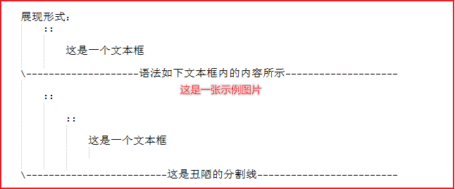

reStructuredText部分语法¶
文字块/文本框¶
用“::”两个英文冒号加一个空行表示接下来是一个文本框。文本框的内容需要缩进。文本框止于一个空行。
- 展现形式：
这是一个文本框-—————————————语法如下文本框内的内容所示—————————————-
:: 这是一个文本框-——————————————–这是丑陋的分割线———————————————
标题¶
用“#”、“=”、“-”等符号在标题下方输入一行，代表标题分级。实际上用
#=+-_^*:等符号都可以。
- 展现形式：
再来一个二级标题¶
这也是一个三级标题¶
这是四级标题¶
-—————————————语法如下文本框内的内容所示—————————————-
这是二级标题 ============ 这是三级标题 ~~~~~~~~~~~~~~~~~~~~~~~~~~~~~~~~~~~~~ 再来一个二级标题 ======================= 这个四级标题显示不出来 ::::::::::::::::::::::::::::::::::::: 这也是一个三级标题 ~~~~~~~~~~~~~~~~~~~~~~~~~~~~~~~~~~~~~ 这是四级标题 :::::::::::::::::::::::::::::::::::::-——————————————–这是丑陋的分割线———————————————
此处如果使用一级标题“#”的话，会导致右边侧边栏目录混乱，所以示范从二级目录开始
原则上这些符号的长度至少要跟标题文字一样长，也可以超长，也可以不整齐。
标题符号自身规定没有一二级的顺序，一二三四级标题的级别取决于标题们的第一次出场顺序。
当出场顺序已经确定之后，如一二三级标题确定后，在二级标题后面直接跟上四级标题会导致四级标题无效，因为中间缺失了三级标题。
图片¶
直接上图：

- 展现形式：
-—————————————语法如下文本框内的内容所示—————————————-
.. image:: ./images/reStructuredText/示例图片.png-——————————————–这是丑陋的分割线———————————————